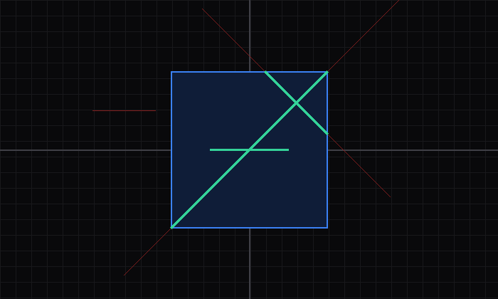
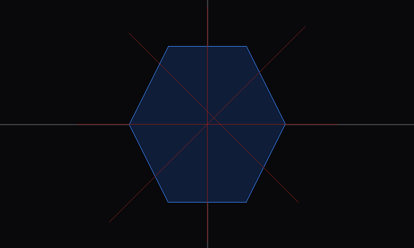

Белорусский государственный университет
Факультет прикладной математики и информатики
ОТЧЁТ
по лабораторной работе №4 по компьютерной графике
Алгоритмы отсечения отрезков и многоугольников двумерным окном
Выполнил:
студент 4 группы 3 курса
Дикан Д. А.
Преподаватель:
старший преподаватель
Соловей Сергей Сергеевич
Минск, 2026
1. Цель работы
Изучить базовые алгоритмы отсечения отрезков двумерной областью видимости: алгоритм деления отрезка пополам (метод средней точки) для прямоугольного окна и параметрический алгоритм Кируса–Бека для произвольного выпуклого многоугольника. Провести анализ их вычислительных характеристик и разработать веб-приложение для наглядной визуализации отсечения произвольных наборов отрезков.
2. Теоретические сведения
-
Коды областей (Коэна–Сазерленда). Для прямоугольного окна [Xmin, Xmax] × [Ymin, Ymax] каждой точке плоскости (x, y) сопоставляется 4-битный код (T, B, R, L), биты которого вычисляются по условиям:
T = (y > Ymax),
B = (y < Ymin),
R = (x > Xmax),
L = (x < Xmin).
Для отрезка с кодами концов c1 и c2 выполняются побитовые проверки видимости:
c1 | c2 = 0 ⇒ отрезок целиком виден (тривиально принят);
c1 & c2 ≠ 0 ⇒ отрезок целиком невидим (тривиально отброшен).
Если оба условия не выполнились, отрезок требует расчета точек пересечения. При этом равенство c1 & c2 = 0 еще не гарантирует видимость: отрезок может проходить мимо угла окна через две смежные внешние области.
-
Алгоритм деления отрезка пополам (средняя точка). Позволяет определить границы видимой части отрезка методом двоичного поиска без деления на угловой коэффициент. На отрезке [A, B] рассчитывается середина:
M = (A + B) / 2 = ((xA + xB) / 2, (yA + yB) / 2).
В целочисленных координатах деление на 2 заменяется быстрым побитовым сдвигом вправо. Если c(M) & c(B) ≠ 0, то половина [M, B] заведомо невидима, и поиск границы продолжается на [A, M], иначе граница смещается в M. Процесс повторяется до достижения заданной точности:
n = ⌈log2(L / ε)⌉ шагов, где L — длина отрезка, ε — требуемая точность.
После сходимости к границе выполняется обязательная проверка принадлежности найденной точки окну, что исключает отрезки, проходящие мимо угла.
-
Алгоритм Кируса–Бека. Применяется к произвольному выпуклому m-угольнику с обходом вершин V0, ..., Vm-1 против часовой стрелки. Отрезок задается параметрически:
P(t) = P1 + t · D, где D = P2 - P1, t ∈ [0, 1].
Внутренняя нормаль к ребру ei = ViVi+1 равна:
Ni = (-(yi+1 - yi), xi+1 - xi).
Параметр ti в точке пересечения прямой отрезка с ребром вычисляется как:
ti = -(Ni · Wi) / (Ni · D), где Wi = P1 - Vi.
Обновление параметров входа и выхода из многоугольника:
tin = max(tin, ti) при Ni · D > 0 (вход);
tout = min(tout, ti) при Ni · D < 0 (выход).
Если Ni · D = 0, отрезок параллелен ребру: при Ni · Wi < 0 он лежит снаружи и отбрасывается. Отрезок видим, если tin ≤ tout.
3. Архитектура и реализация приложения
- Серверная часть (Python 3, Flask): файл
processing.py реализует алгоритмы средней точки и Кируса–Бека с обработкой граничных случаев, файл main.py предоставляет веб-интерфейс и API для загрузки файлов и запуска отсечения.
- Клиентская часть (HTML5, Tailwind CSS, Canvas API): интерактивная координатная плоскость с масштабированием, подсветка отсекающего окна и видимых частей линий, ручной ввод и загрузка тестовых файлов формата n / отрезки / окно.
4. Результаты работы
Контрольный набор отрезков. Для прямоугольного окна [0, 20] × [0, 20] из примера задания протестированы 5 базовых типов расположения отрезков:
| # |
Исходный отрезок |
Коды концов |
Классификация |
Результат отсечения |
| 1 |
(-15, -15) → (15, 15) |
1001 / 0000 |
Пересекает угол |
(0, 0) → (15, 15) |
| 2 |
(-5, 25) → (25, -5) |
0101 / 1010 |
Пересекает две границы |
(0, 20) → (20, 0) |
| 3 |
(2, 5) → (18, 5) |
0000 / 0000 |
Тривиально видим |
(2, 5) → (18, 5) (целиком) |
| 4 |
(-25, 0) → (-5, 0) |
0001 / 0001 |
Тривиально невидим (слева) |
Полностью отброшен |
| 5 |
(25, 25) → (35, 35) |
0110 / 0110 |
Тривиально невидим (справа) |
Полностью отброшен |

Рис. 1: Отсечение отрезков прямоугольным окном алгоритмом средней точки
Отсечение произвольным выпуклым многоугольником
На рисунке 2 представлена визуализация работы параметрического алгоритма Кируса–Бека на выпуклом шестиугольнике с вершинами (-15, -10), (0, -18), (15, -10), (15, 10), (0, 18), (-15, 10). Алгоритм корректно определяет входящие и выходящие точки пересечения и оставляет только видимые части отрезков (выделены зеленым цветом).

Рис. 2: Отсечение отрезков выпуклым шестиугольником алгоритмом Кируса–Бека
Сравнение характеристик алгоритмов
В ходе практической проверки алгоритмов на контрольных данных и выборке из 1000 линий сопоставлены их вычислительные свойства:
| Характеристика |
Алгоритм средней точки |
Алгоритм Кируса–Бека |
| Форма области |
Только прямоугольное окно с гранями, параллельными осям координат |
Произвольный выпуклый m-угольник с вершинами против часовой стрелки |
| Время (1000 линий) |
3.54 мс (в среднем ~16 шагов бисекции на отрезок) |
1.45 мс (прямой расчет параметров t для каждого ребра) |
| Арифметика |
Сложение и побитовый сдвиг (деление на 2), без операции деления |
Скалярные произведения векторов и вещественное деление |
| Особые случаи |
Линии вне окна, но с c1 & c2 = 0, требуют обязательной проверки точки |
Параллельные отрезки (N · D = 0) проверяются по знаку N · W |